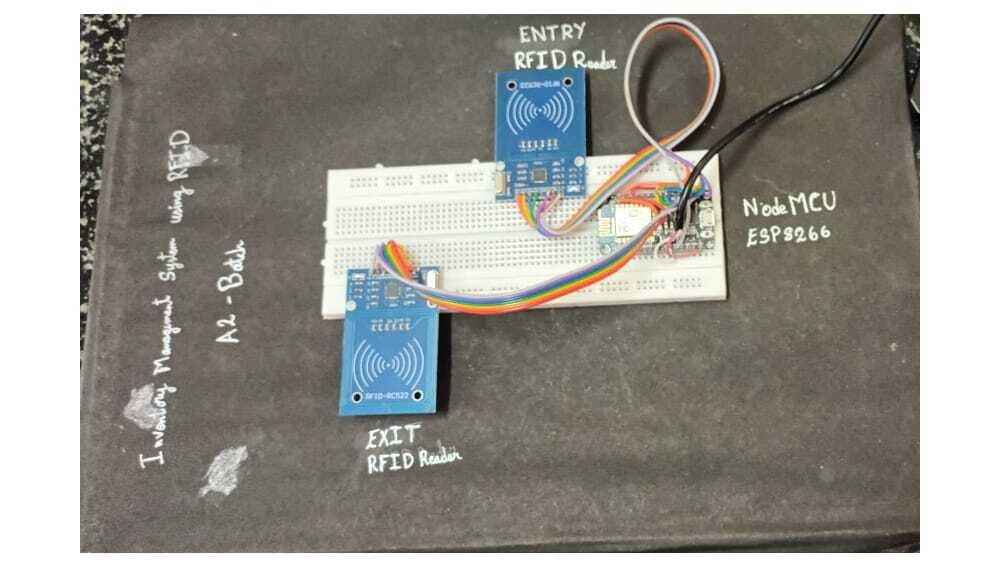
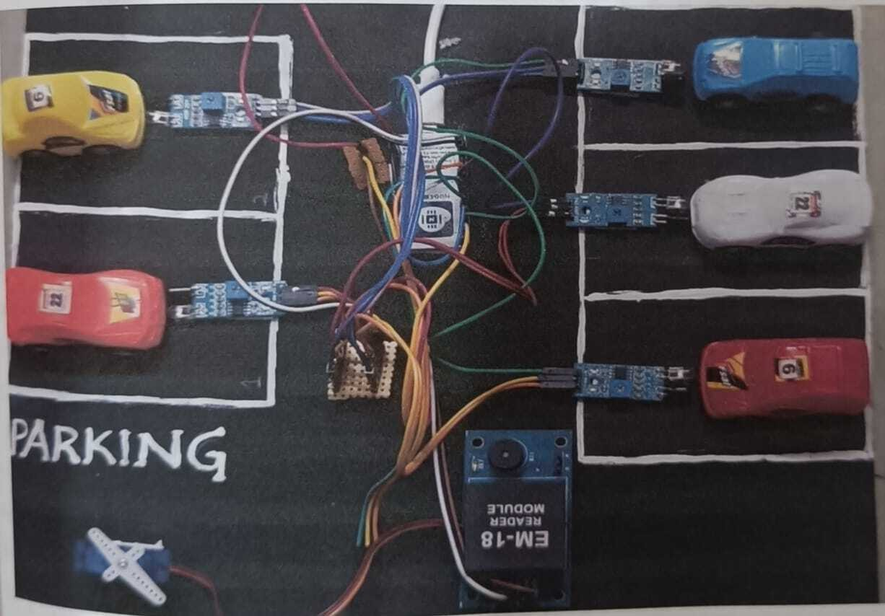

🚀 Web Developer | MERN Stack Enthusiast
Hello! I'm Sahithi, a passionate web developer skilled in creating static, responsive and interactive web applications.I am a dedicated Web Developer and enthusiastic MERN Stack Developer with a strong passion for building interactive, user-friendly, and efficient web applications. My technical expertise lies in the MERN stack—MongoDB, Express.js, React.js, and Node.js—which enables me to develop full-fledged applications from front to back. I thrive on solving real-world problems through clean code, modern design, and scalable architecture. With a continuous learning mindset, I actively stay updated with the latest technologies and trends in web development. My goal is to contribute to innovative projects, collaborate with forward-thinking teams, and deliver meaningful digital experiences that make a difference.
BackThis project was designed to replace traditional, error-prone barcode systems with a more reliable, automated RFID-based solution. By integrating RFID readers and tags with a central web application, the system enables real-time tracking of inventory movement, reduces manual labor, and minimizes stock discrepancies. It supports streamlined stock updates, quick identification of items, and secure data storage, ultimately improving operational workflows in warehouse and retail environments. This project deepened my understanding of IoT integration with web technologies and demonstrated my ability to deliver scalable, real-world solutions using modern development tools.
This project focuses on solving urban parking challenges through an intelligent, real-time monitoring system powered by IoT. It utilizes a network of sensors to detect vehicle presence and transmits live data to a web or mobile application, enabling users to view available parking spots instantly. By integrating microcontrollers, cloud services, and intuitive UI/UX design, the system improves user experience, reduces traffic congestion, and optimizes space utilization
sahithi.maddiveni2020@gmail.com
+91 9381165545
Back